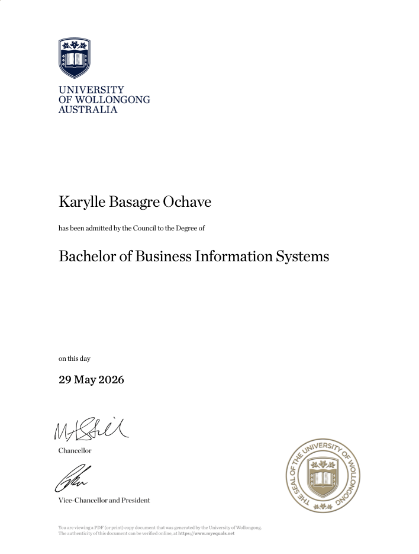
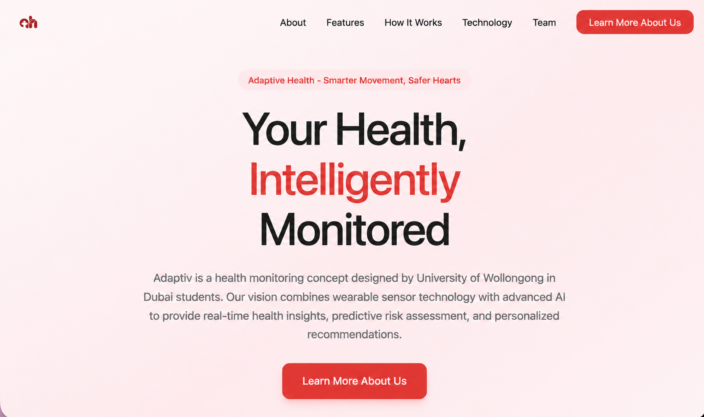

Degree awarded · 29 May 2026
Bachelor of Business Information Systems
University of Wollongong Australia
View diplomaDubai, UAE
Karylle B. Ochave
Social media, digital marketing, web development & UI/UX
I connect business thinking with visual storytelling to create clear, useful, and memorable digital experiences.
Social strategy
Influencer marketing
Web development
UI/UX design
01 · Introduction
A Business Information Systems graduate with a creative eye and a practical understanding of how brands operate online.
I bring together experience in social media management, digital marketing, web development, CRM systems, business operations, and customer engagement. My work is grounded in clear communication, thoughtful design, and solutions that support real business goals.
From shaping content to building interfaces, I enjoy turning ideas into digital experiences that feel cohesive, intentional, and easy to use.
02 · Foundation
A path shaped by business systems, customer insight, digital execution, and creative technology.

Degree awarded · 29 May 2026
University of Wollongong Australia
View diploma03 · Capabilities
05 · Influencer marketing
06 · Websites
Responsive digital experiences where business logic, visual clarity, and usability meet.
07 · Mobile UI/UX

University of Wollongong in Dubai
An AI-based cardiovascular monitoring experience with dedicated access for patients and doctors.
08 · The value
“Creative enough to stand out. Strategic enough to drive results.”
Available for selected opportunities
Let’s discuss your project09 · Get in touch
Have a role, campaign, website, or digital idea in mind? Tell me what you are working on.
Direct message
Start a conversation on WhatsApp and tell me about your opportunity, campaign, website, or digital idea.
Start a conversation WhatsApp · +971 52 480 6236
04 · Social media
Accounts &
content
Flexible case-study spaces prepared for channel strategy, creative work, and verified performance once campaign materials are added.